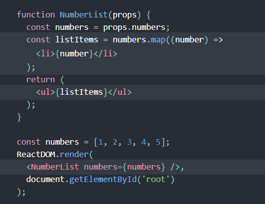

React embrace the fact that rendering logic is inherently couple with other UI logic
React doesn't require JSX, but many people find it helpful
It can be used inside of if statements and for loops
You should either use quotes (for string values) or curly braces (for expressions), but not both in the same attribute.
const element = <div> tabIndex="0"></div>
const element = <img src={user.avatarUrl}></img>
Warning:
Since JSX is closer to JavaScript than to HTML, React DOM uses camelCase property naming convention instead of HTML attribute names.
For example, class becomes className in JSX, and tabindex becomes tabIndex.
Babel compiles JSX down to React.createElement() calls.
| JSX | React Native | ES6 result |
|---|---|---|
const element = (
<h1 className="greeting">
Hello, world!
</h1>
);
|
const element = React.createElement(
'h1',
{className: 'greeting'},
'Hello, world!'
);
|
//simplied result
const element = {
type: 'h1',
props: {
className: 'greeting',
children: 'Hello, world!'
}
};
|
react element 可以查看上面的例子 const element = <h1> Hello, world</h1>
Unlike browser DOM elements, React elements are plain objects, and are cheap to create. React DOM takes care of updating the DOM to match the React elements.
To render a React element into a root DOM node, pass both to ReactDOM.render():
const element = <h1> Hello, world</h1>
ReactDOM.render(element, document.getElementById('root'));
React通过stateful component进行更新
component可以接受参数，并返回react elment
function and ES6 class are both a valid React component
function Welcome(props) {
return <h1>Hello, {props.name}</h1>;
}
class Welcome extends React.Component {
render() {
return <h1>Hello, {this.props.name}</h1>;
}
}
Components can refer to other components in their output.
App is a component and it includes others
function App() {
return (
<div>
<Welcome name="Sara" />
<Welcome name="Cahal" />
<Welcome name="Edite" />
</div>
);
}
All React components must act like pure functions with respect to their props.
pure functions are functions that do not attempt to change their inputs, and always return the same result for the same inputs.
this is the example of an impure function
function withdraw(account, amount) {
account.total -= amount;
}
So in React, we use "state" to allow components to change outputs over time in response to user actions, network responses, and anything else
state is similar to props, but it is private and fully controlled by the component
感觉其实根本是将局部的props绑定到了一个this上实现了持久化
We want to set up a timer whenever the Clock is rendered to the DOM for the first time. This is called “mounting” in React.在这里设置一个timer每隔一秒调用一次setState方法即可以实现数据的更新
We also want to clear that timer whenever the DOM produced by the Clock is removed. This is called “unmounting” in React.
// Wrong (初始化只存在于constructor中)
this.state.comment = 'Hello';
// Correct
this.setState({comment: 'Hello'});
子组件没办法知道这些数据是不是来自于父亲组件的state，或者是props又或者是手动输入
this is commonly called a “top-down” or “unidirectional” data flow. Any state is always owned by some specific component, and any data or UI derived from that state can only affect components “below” them in the tree.
Handling events with React elements is very similar to handling events on DOM elements. There are some syntactic differences:
<button onclick="activateLasers()">
Activate Lasers
</button>
<button onclick={activateLasers}>
Activate Lasers
</button>
another difference is that we cannot use return false to prevent default behavior in React.
function ActionLink() {
function handleClick(e) {
e.preventDefault();
console.log('The link was clicked.');
}
return (
<a href="#" onClick={handleClick}>
Click me
</a>
);
}
有三种事件控制的方法
一般来说，在react中不需要使用addEventListener进行event control， 因为JSX很像HTML，其实可以直接用类HTML的事件控制方法,这是最方便快捷的，然后将函数写在class内作为class的一个方法
In react, you can create distinct components that encapsulate behavior you need. Then you cna render only some of them, dependign on the state of your component
we can use variable to store element
button = <LogoutButton onClick={this.handleLogoutClick} />
make sure the component return null, then it will not appear
we use map in react to create lists as we do in JavaScript
the example above show us how to display a list. It's useful if you can refactor the example into a component that accepts an array and output results as below
在React当中，li被要求赋予一个key值用于之后识别该元素是否有修改，添加或者删除
default value of key for each li element is the index value of an elemnt in the array
默认值时array当中每个元素的index值，但是如果是对象列表的话，也可以创建属于自己的id属性用于遍历显示，和识别目标
HTML form elements work a little bit differently from other DOM elements in React, because form elements naturally keep some internal state. For example, this form in plain HTML accepts a single name
An input form element whose value is controlled by React in this way is called a “controlled component”.
实现了双向数据绑定，通过设置事件控制，从view控制model，通过给元素设置value，从model控制了view
input
当有多个input的时候，一般做法是对每个input写一个value change的方法，但是这样会造成冗余，常见的解决方法是给每个input设置一个name， 在input事件处理的，通过name判断是哪个element并进行不同操作
we recommend using controlled components to implement forms.
In a controlled component, form data is handled by a React component. In a uncontrolled elements, form data is handled by the DOM itself.
With an uncontrolled component, you often want React to specify the initial value, but leave subsequent updates uncontrolled
check this link for difference between controlled and uncontrolled componentsControlled form always has the current value of the input, without needing to ask for it explicitly.
This means your data (state) and UI (inputs) are always in sync. The state gives the value to the input, and the input asks the Form to change the current value.
This also means that the form component can respond to input changes immediately; for example, by:
代码复用重做，当然这些通过一个class也是完全可以实现的
本质上就是通过return 返回一个父组件标签在外，自定义信息作为参数，自身内容作为父标签所包含内容的写法
For some components, they don't know their children ahead of time, We recommend that such components use the special children prop to pass children elements directly into their output:
有一些组件，不知道自己的子组件是什么，可以直接使用{props.children}，所以在子组件中使用父组件的时候，会自动把父组件标签内的参数进行传递
当然如果知道有哪些子组件的话，最方便的方法还是直接在父组件中引入子组件
有些时候component是已有components的一个特例，这个时候也是直接在子组件中返回父组件，并填入自定义信息
在react当中，继承的例子都是可以通过component composition来实现的. 组件可以接受的参数是任意的，基础类型，React元素 或者是函数
当需要一个非UI的functionality的时候，可以将其提出独自创建作为一个module，当别的组件需要使用的时候可以引入
In react, it's challenge to figure out which component own these states
valueChange (t, event) {
console.log('bind2', this, t, event)
}
render () {
return (
<button onClick={this.valueChange.bind(this,this.state.t)}>打印2</button>
)
}
in the case of arrow functions, this is bound lexically. This means that it uses the context of the enclosing function — or global — scope as its this value. In the case of the public class fields syntax example, the arrow function is enclosed inside the Foo class — or constructor function — so the context is the component instance, which is what we want.
class Foo extends React.Component{
handleClick = () => {
console.log(this);
}
render(){
return (
<button type="button" onClick={this.handleClick}>
Click Me
</button>
);
}
}
class Foo extends React.Component{
handleClick(event){
console.log(this);
}
render(){
return (
<button type="button" onClick={(e) => this.handleClick(e)}>
Click Me
</button>
);
}
}
Refs provide a way to access DOM nodes or React elements created in the render method.
常用的数据传递是使用props从父组件向子组件传递，但是有的情况下，如果一个子组件没有在数据传递流当中，我们就可以使用refs